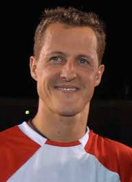

Formula One, commonly known as Formula 1 or F1, is the highest class of international racing for open-wheel single-seater formula racing cars sanctioned by the Fédération Internationale de l'Automobile (FIA). The FIA Formula One World Championship has been one of the world's premier forms of racing since its inaugural running in 1950. The word formula in the name refers to the set of rules all participants' cars must follow. A Formula One season consists of a series of races, known as Grands Prix. Grands Prix take place in multiple countries and continents on either purpose-built circuits or closed public roads.
Formula One originated from the European Motor Racing Championships of the 1920s and 1930s. The formula is a set of rules that all participants' cars must follow. Formula One was a formula agreed upon in 1946 to officially become effective in 1947. The first Grand Prix in accordance with the new regulations was the 1946 Turin Grand Prix, anticipating the formula's official start.[citation needed] Before World War II, a number of Grand Prix racing organisations made suggestions for a new championship to replace the European Championship, but due to the suspension of racing during the conflict, the new International Formula for cars did not become formalised until 1946, to become effective in 1947. The new World Championship was instituted to commence in 1950.[citation needed] The first world championship race took place at Silverstone Circuit in the United Kingdom on 13 May 1950. Giuseppe Farina, competing for Alfa Romeo, won the first Drivers' World Championship, narrowly defeating his teammate Juan Manuel Fangio. Fangio won the championship in 1951, 1954, 1955, 1956, and 1957. This set the record for the most World Championships won by a single driver, a record that stood for 46 years until Michael Schumacher won his sixth championship in 2003. Juan Manuel Fangio's 1951 title-winning Alfa Romeo 159 A Constructors' Championship was added in the 1958 season. Stirling Moss, despite being regarded as one of the greatest Formula One drivers in the 1950s and 1960s, never won the Formula One championship. Between 1955 and 1961, Moss finished second in the championship four times and third the other three times. Fangio won 24 of the 52 races he entered—still the record for the highest Formula One winning percentage by an individual driver. National championships existed in South Africa and the UK in the 1960s and 1970s. Promoters held non-championship Formula One events for many years. Due to the increasing cost of competition, the last of these was held in 1983. This era featured teams managed by road-car manufacturers, such as Alfa Romeo, Ferrari, Mercedes-Benz and Maserati. The first seasons featured prewar cars like Alfa Romeo's 158, which were front-engined, with narrow tyres and 1.5-litre supercharged or 4.5-litre naturally aspirated engines. The 1952 and 1953 seasons were run to Formula Two regulations, for smaller, less powerful cars, due to concerns over the dearth of Formula One cars. When a new Formula One formula for engines limited to 2.5 litres was reinstated for the 1954 world championship, Mercedes-Benz introduced its W196, which featured things never seen on Formula One cars before, such as desmodromic valves, fuel injection, and enclosed streamlined bodywork. Mercedes drivers won the championship for the next two years, before the team withdrew from all motorsport competitions due to the 1955 Le Mans disaster.
F1 seasons are a series of races known as Grands Prix, held on purpose-built circuits and public roads around the world. Below are links to detailed pages for some recent seasons:
Some of the notable drivers in F1 history include Michael Schumacher, Ayrton Senna, and Lewis Hamilton.
| Driver | Team(s) |
|---|---|
| Michael Schumacher | Benetton, Ferrari |
| Ayrton Senna | Toleman, Lotus, McLaren |
| Lewis Hamilton | McLaren, Mercedes |
F1 is one of the most popular and well-known auto racing sports in the world.